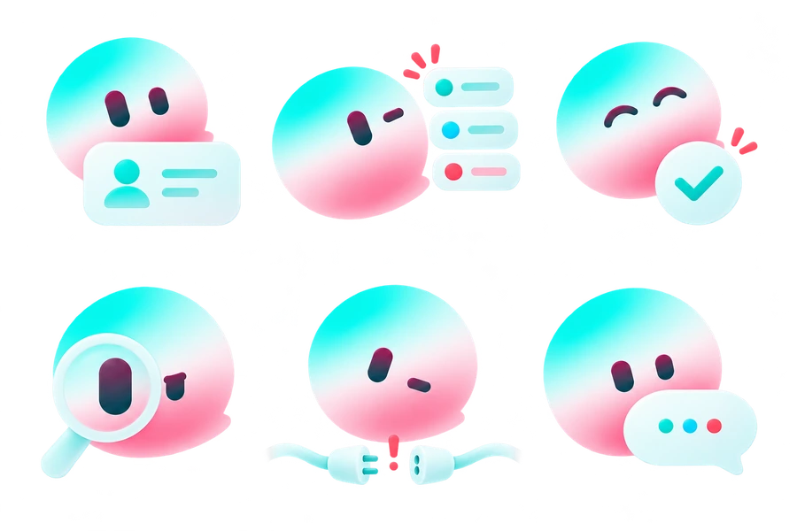
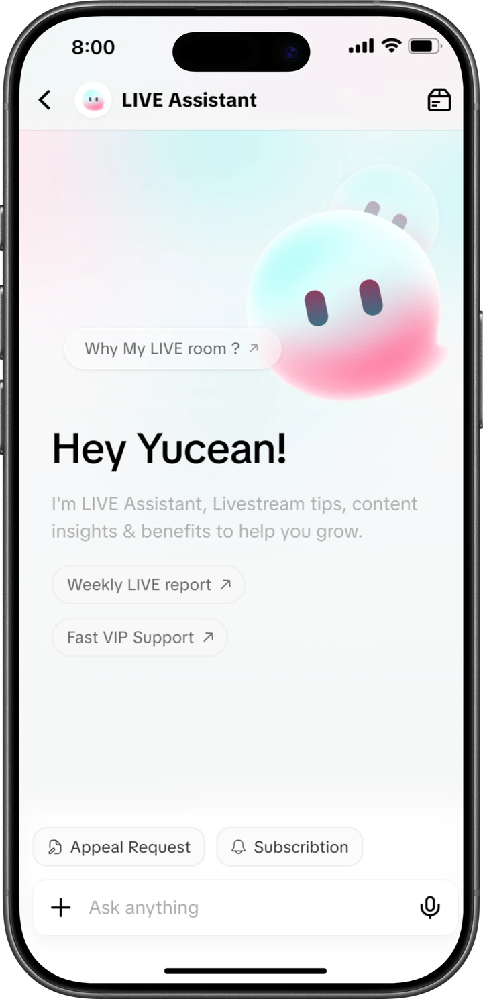
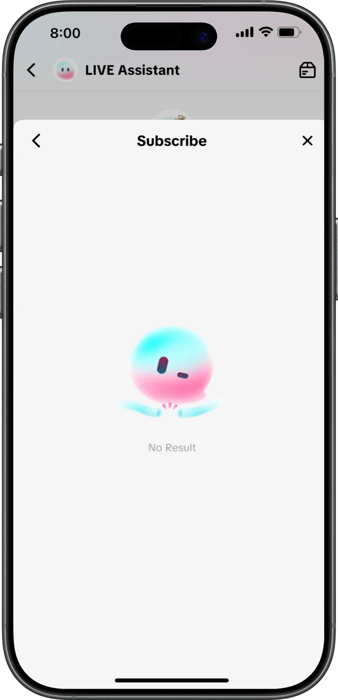

TikTok LIVE Assistant 是什么
直播服务入口


TIKTOK LIVE ASSISTANT
TikTok LIVE Assistant 是直播场景中的常驻服务入口。主播在这里接收周报、活动邀约和经营建议，高价值付费用户可以查看 VIP 权益。用户也可以围绕收到的内容继续提问或办理相关事项。
 TikTok AI 直播助手设计
TikTok AI 直播助手设计
TikTok LIVE UX Project Motion Design

这次升级将 TikTok 直播助手从消息入口扩展为 AI 服务。主播可以从直播周报进入助手，继续查询直播表现、获取经营建议或处理申诉。高价值付费用户则能直达 VIP 权益和专属支持。
直播服务入口
TikTok LIVE Assistant 是直播场景中的常驻服务入口。主播在这里接收周报、活动邀约和经营建议，高价值付费用户可以查看 VIP 权益。用户也可以围绕收到的内容继续提问或办理相关事项。
引入 AI 后，助手可以结合直播和账号信息给出更具体的回应。设计需要让用户知道它能做什么，并在原有服务路径里顺手用起来。

汇总直播数据，帮助主播快速找到变化。

结合直播表现，给出可以尝试的下一步。

解释规则与账号状态，并提供相关办理入口。
建立 AI 直播服务能力，提高自助解决问题的效率。
让 AI 能力和处理状态可感知，让回答更易读、更容易采取行动。
访谈了 10 多位 TikTok 主播和高价值付费用户，了解他们如何查看直播表现、咨询规则和使用权益。

😀 周报和活动邀约都能很快找到。
😡 直播政策看不懂时，经常只能找人工客服。

😀 能很快找到专属客服。
😡 经常忘记自己还有哪些权益。

😀 两类服务分开，比较容易理解。
😡 遇到问题要来回切换会话，很费时间。
🔔 调研总结：主播需要读得懂、能照做的建议；VIP 用户需要及时看到可用权益；拥有双重身份的用户希望减少会话切换。

用同一个直播经营问题测试四款 AI 助手，对比如何引导提问、反馈进度和呈现可执行建议。


T · 任务：如何提升直播间观看人数？
A · 分析：比较入口、反馈、内容与操作路径。
D · 设计：提炼适用于直播服务的方案。

结论与建议分层，配有抖音视频案例。回答较长，视频入口出现得较晚。

提供分析摘要与相关内容卡，但多个入口会分散对当前任务的注意力。

图示、表格和来源有助于理解。移动端的表格换行会增加阅读成本。

思考摘要和正文区分清楚。正文段落偏长，结论容易被埋没。
🔔 竞品洞察：结论应出现在回答开头，依据和查询过程按需展开，相关操作紧跟建议。
让用户看得懂助手的状态、拿得到有用的回答，并能从符合身份的入口继续操作。
AI Visual Refresh
Response Design
Tailored Support Flows
当助手开始分析直播表现并协助用户解决问题，形象和状态反馈可以让用户感知它正在做什么。
对话与回应
从客服回复和弹幕中提取沟通、回应的线索。
用圆润主体和对话尾巴建立轮廓。
用 TikTok 的青色与粉色建立品牌关联。
从输入点阵延展出思考、检索和回复。
可感知的服务状态
从圆角气泡出发，保留对话尾巴，再用圆润轮廓和品牌色形成易识别的角色。


保留对话的视觉线索，让新形象仍然像一个可以交流的助手。
 #00F2EA#FFFFFF#FF004F
#00F2EA#FFFFFF#FF004F沿用 TikTok 青、粉与白色，让助手在不同界面中保持一致的辨识度。

表情帮助用户辨认状态，动效在开始处理、等待和完成时给出反馈。



把动效拆成可复用的状态，和研发明确每种状态的触发条件与切换方式，方便在不同服务场景落地。


从一条直播周报开始，让主播知道助手能帮自己做什么。
用「本周直播周报」作为触发点，首次引导把使用价值说清楚，并减少从看到消息到开始使用的步骤。
把助手放进已有消息列表，用户查看消息时就能发现入口。
在消息预览中展示 Weekly LIVE report，让主播知道这条消息与本周直播有关。
点击消息直达助手，首次引导说明能力，再用一个主按钮进入体验。


根据用户身份和当下任务推荐问题，让主播和 VIP 用户都有明确的提问起点。


结合用户身份、账号状态和近期关注事项更新推荐。主播可以从周报或申诉开始，VIP 用户可以直达专属支持与快速申诉。
可以打字、语音转文字，或附上直播截图，让用户在不便输入或难以描述问题时也能把情况说清楚。


把查询进度、判断依据和结果放在同一条会话里，减少等待时的不确定感。
主播问「为什么这场直播的在线人数偏低？」时，助手先提示正在核对账号信息，再给出结论。用户可以展开查询详情，查看回答参考了哪些信息。


当回答又长又生硬，用户很难判断它有没有解决自己的问题。
 回答的不是我想问的态度太机械、生硬信息太长行业术语太多很难知道接下来怎么办我找不到重点
回答的不是我想问的态度太机械、生硬信息太长行业术语太多很难知道接下来怎么办我找不到重点根据用户的任务和阅读习惯，定义回答该说什么，以及怎么说。
以 TikTok 主播为主，也服务高价值付费用户。不同地区的用户对平台规则与术语的熟悉程度不同。
主播想了解直播表现、解决账号问题并获得经营建议；VIP 用户更关心可用权益和专属支持。
先看结论和下一步，再按需查看依据。遇到限制或异常时，用户更需要清楚的说明和可选操作。
为什么直播间观看人数下降了？
为什么直播间观看人数下降了？
这场直播的推荐流量比之前少。你可以先查看详情，再决定是否申诉。
用同一个直播问题对比升级前后的回答，检验用户是否能快速找到结论、理解原因并采取行动。
直播经营专家
承认用户遇到的困难，再给出具体建议。说明可选操作，让用户自己决定下一步。
专业判断 · 自然对话 · 保留选择
LIVE Assistant


对比 AI 助手功能上线前后的日活跃用户与转人工率。
 2.8×
2.8×日活跃用户
 −31 个百分点
−31 个百分点转人工率